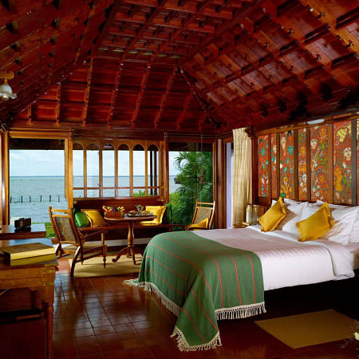
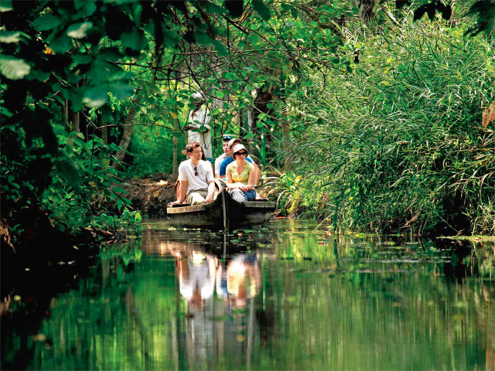
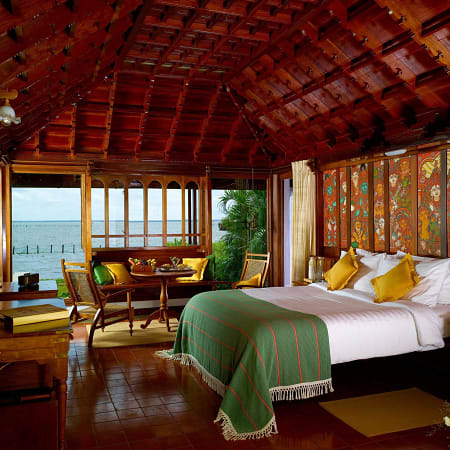
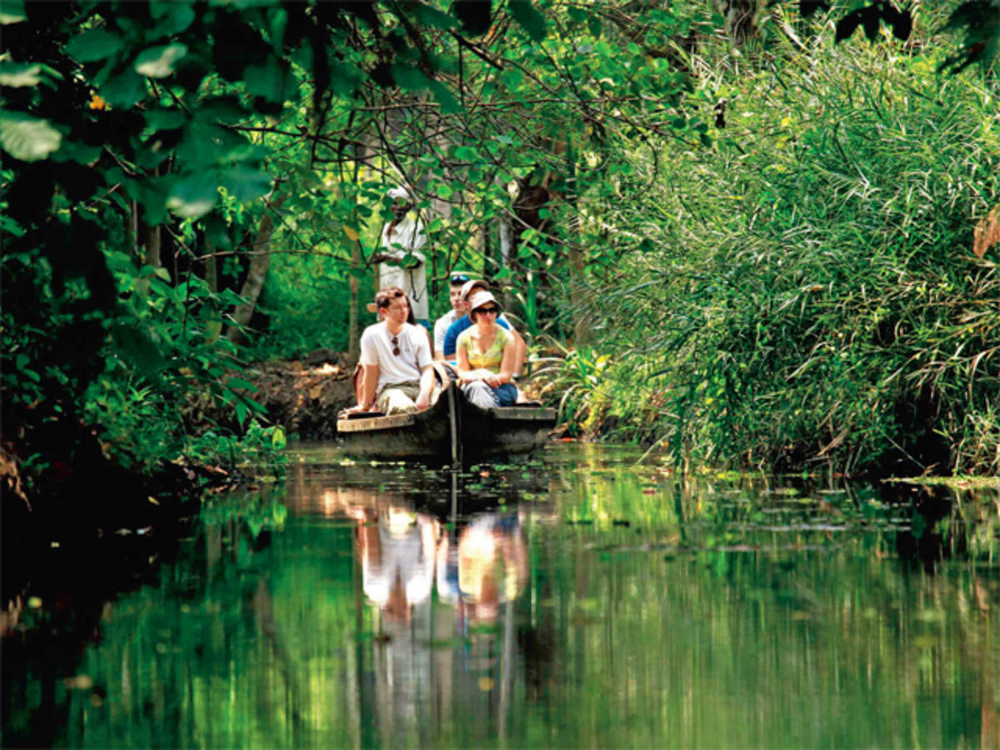

Kumarakom
Kumarakom umarakom (View video) is a land of backwaters in which every eddy has a story to share. This quaint village sitting on a group of little islands in the serene Vembanad Lake is only 16 km away from Kottayam town. For visitors who want to stay close to Nature, there is Kumarakom Bird Sanctuary. Spread across 14 acres on the banks of Vembanad Lake (View video), it is a favourite haunt of migratory birds like the Siberian Storks, and an ideal location to spot other birds like egrets, darters, herons, teals, waterfowls, cuckoos and wild ducks as well. How to reach Kottayam is the nearest railway station which is about 13 km from Kumarakom. The nearest airport, Cochin International Airport Ltd. (CIAL), is about 94 km away. In addition to an enchanting backwater cruise, Kumarakom offers visitors opportunities to interact closely with the local community by encouraging them to participate in activities like roof thatching, coir spinning and fishing. It is no wonder that Kumarakom is Kerala’s first Responsible Tourism destination. It has won the prestigious UNWTO Ulysses Award for Excellence and Innovation in Tourism as well as the National Award for the best tourism project. Waterscapes, the backwater resort of the Kerala Tourism Development Corporation (KTDC), containing independent cottages built on stilts amidst coconut groves, is one of the highlights of Kumarakom.
 


